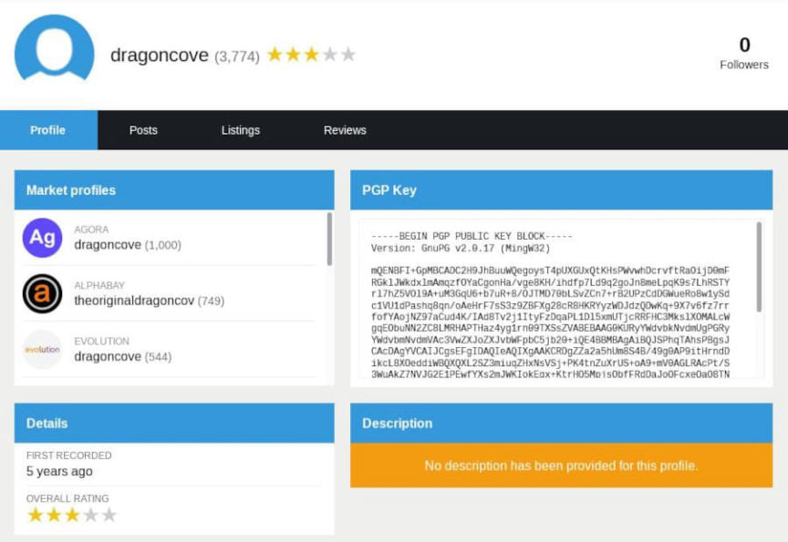
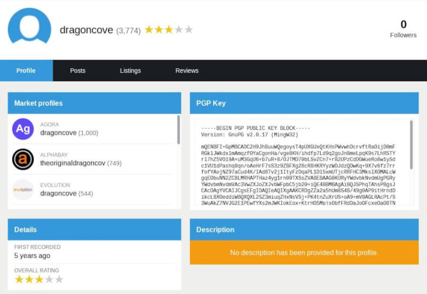

Darkweb Vendor Dragoncove Indicted in New York
~3 min read | Published on 2022-07-18, tagged Darkweb-Vendor using 603 words.
A three-count indictment accuses a man living in New York of selling heroin and cocaine through vendor accounts on darkweb markets.
An indictment was unsealed in the United States District Court for the Eastern District of New York accuses Edison Hernandez of selling drugs on Silk Road, AlphaBay, Dream Market, and Wall Street Market. According to the indictment, Hernandez:[list]*Operated a vendor account on Silk Road under the username “dragoncove” from January 2013 to September 2013;*Operated a vendor account on AlphaBay under the username “theoriginaldragoncove” from September 2016 to June 2017;*Operated a vendor account on Dream Market under the username “originaldragoncove” from January 2019 and February 2019; and*Operated a vendor account on Wall Street Market under the username “dragoncove” in April 2019[/list]
All of Hernandez’s accounts used the same PGP key. The defendant and others sold heroin and cocaine through the vendor accounts listed in the indictment. Hernandez had more than 1,000 completed transactions across his vendor accounts and “regularly received high ratings and positive reviews from buyers.”
According to dragoncove’s profile on Recon, the vendor 3,774 transactions and had 1,000 transactions on Agora alone (<code>/vendor/0xE06596B66B98549B</code>).
Count one of the indictment is Distribution and Possession with Intent to Distribute Heroin and Cocaine. Count two is the Delivery and Distribution of Heroin and Cocaine by Means of the Internet.

“Hernandez is alleged to have used complex technology such as the dark web, cryptocurrency, and encrypted messaging applications to conceal his actions. Today’s enforcement actions are examples to high-tech criminals that no matter how well-hidden you believe you are, you are not beyond the reach of the law,” said Homeland Security Investigations (HSI) New York Acting Special Agent in Charge Patel. “HSI and our partners will continue to work tirelessly to keep deadly narcotics out of our communities, no matter where they are sold - on the street corner or from the virtual corners of the dark web.”
A third count of the indictment accuses Edison Hernandez, Irvin Hernandez, Michael Caruso, and Raymer Ynoa of operating a so-called “a Door-to-Door Drug Delivery Service.” The charge is one count of Conspiracy to Distribute and Possess with Intent to Distribute Cocaine, Methamphetamine, Ketamine, and MDMA.
Per the indictment, the defendants operated their door-to-door drug distribution operation between February 2019 and January 2022. They named their business Nino & Viktor’s Pastry Shoppe and distributed cocaine, methamphetamine, ketamine, and 3,4 Methylenedioxymethamphetamine, also known as MDMA or ecstasy, to others through the delivery service.
Customers ordered from the shop by messaging a “particular phone number over an encrypted communication platform.” The defendants had a menu of coded products that customers could order. The announcement from the U.S. Attorney’s Office for the Eastern District of New York provided some examples:[list]*the defendants referred to cocaine as “grapes” and methamphetamine as “tic tacs.”*In addition, customers ordered drugs not by weight but by “unit,” with each unit costing $100, regardless of the drug. Hence, a customer who ordered “two grapes” and “two tic tacs” would pay a total of $400 for two “units” of cocaine and two “units” of methamphetamine.[/list]
“As alleged, Edison Hernandez went to great lengths to conceal his identity so he could send thousands of packages containing dangerous drugs throughout the country and team up with his co-conspirators to deliver them door-to-door in New York City,” stated United States Attorney Peace. “Hiding behind the dark web, encryption services, or BitCoin will not stop this Office from rooting out those who flood our communities with illegal and hazardous narcotics.”
Dark Web Vendor of Illegal Narcotics Indicted for Distributing Heroin and Cocaine in Exchange for Bitcoin | archive.is, archive.org, justice.gov
Indictment pdf
An indictment was unsealed in the United States District Court for the Eastern District of New York accuses Edison Hernandez of selling drugs on Silk Road, AlphaBay, Dream Market, and Wall Street Market. According to the indictment, Hernandez:[list]*Operated a vendor account on Silk Road under the username “dragoncove” from January 2013 to September 2013;*Operated a vendor account on AlphaBay under the username “theoriginaldragoncove” from September 2016 to June 2017;*Operated a vendor account on Dream Market under the username “originaldragoncove” from January 2019 and February 2019; and*Operated a vendor account on Wall Street Market under the username “dragoncove” in April 2019[/list]
All of Hernandez’s accounts used the same PGP key. The defendant and others sold heroin and cocaine through the vendor accounts listed in the indictment. Hernandez had more than 1,000 completed transactions across his vendor accounts and “regularly received high ratings and positive reviews from buyers.”
According to dragoncove’s profile on Recon, the vendor 3,774 transactions and had 1,000 transactions on Agora alone (<code>/vendor/0xE06596B66B98549B</code>).
Count one of the indictment is Distribution and Possession with Intent to Distribute Heroin and Cocaine. Count two is the Delivery and Distribution of Heroin and Cocaine by Means of the Internet.

Dragoncove had nearly 4,000 completed transactions on Recon.
“Hernandez is alleged to have used complex technology such as the dark web, cryptocurrency, and encrypted messaging applications to conceal his actions. Today’s enforcement actions are examples to high-tech criminals that no matter how well-hidden you believe you are, you are not beyond the reach of the law,” said Homeland Security Investigations (HSI) New York Acting Special Agent in Charge Patel. “HSI and our partners will continue to work tirelessly to keep deadly narcotics out of our communities, no matter where they are sold - on the street corner or from the virtual corners of the dark web.”
A third count of the indictment accuses Edison Hernandez, Irvin Hernandez, Michael Caruso, and Raymer Ynoa of operating a so-called “a Door-to-Door Drug Delivery Service.” The charge is one count of Conspiracy to Distribute and Possess with Intent to Distribute Cocaine, Methamphetamine, Ketamine, and MDMA.
Per the indictment, the defendants operated their door-to-door drug distribution operation between February 2019 and January 2022. They named their business Nino & Viktor’s Pastry Shoppe and distributed cocaine, methamphetamine, ketamine, and 3,4 Methylenedioxymethamphetamine, also known as MDMA or ecstasy, to others through the delivery service.
Most of the vendor's feedback was positive.
Customers ordered from the shop by messaging a “particular phone number over an encrypted communication platform.” The defendants had a menu of coded products that customers could order. The announcement from the U.S. Attorney’s Office for the Eastern District of New York provided some examples:[list]*the defendants referred to cocaine as “grapes” and methamphetamine as “tic tacs.”*In addition, customers ordered drugs not by weight but by “unit,” with each unit costing $100, regardless of the drug. Hence, a customer who ordered “two grapes” and “two tic tacs” would pay a total of $400 for two “units” of cocaine and two “units” of methamphetamine.[/list]
“As alleged, Edison Hernandez went to great lengths to conceal his identity so he could send thousands of packages containing dangerous drugs throughout the country and team up with his co-conspirators to deliver them door-to-door in New York City,” stated United States Attorney Peace. “Hiding behind the dark web, encryption services, or BitCoin will not stop this Office from rooting out those who flood our communities with illegal and hazardous narcotics.”
Dark Web Vendor of Illegal Narcotics Indicted for Distributing Heroin and Cocaine in Exchange for Bitcoin | archive.is, archive.org, justice.gov
Indictment pdf